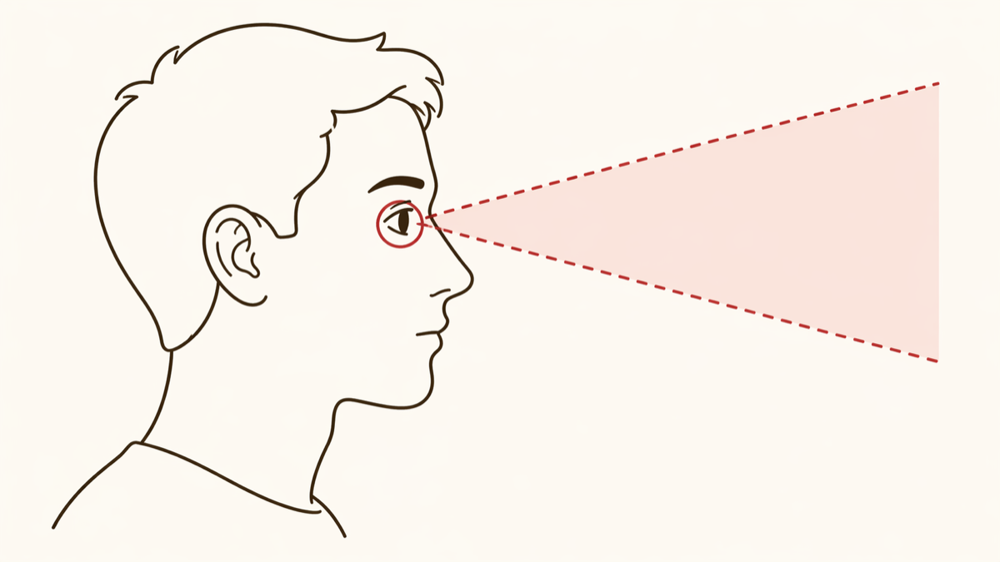
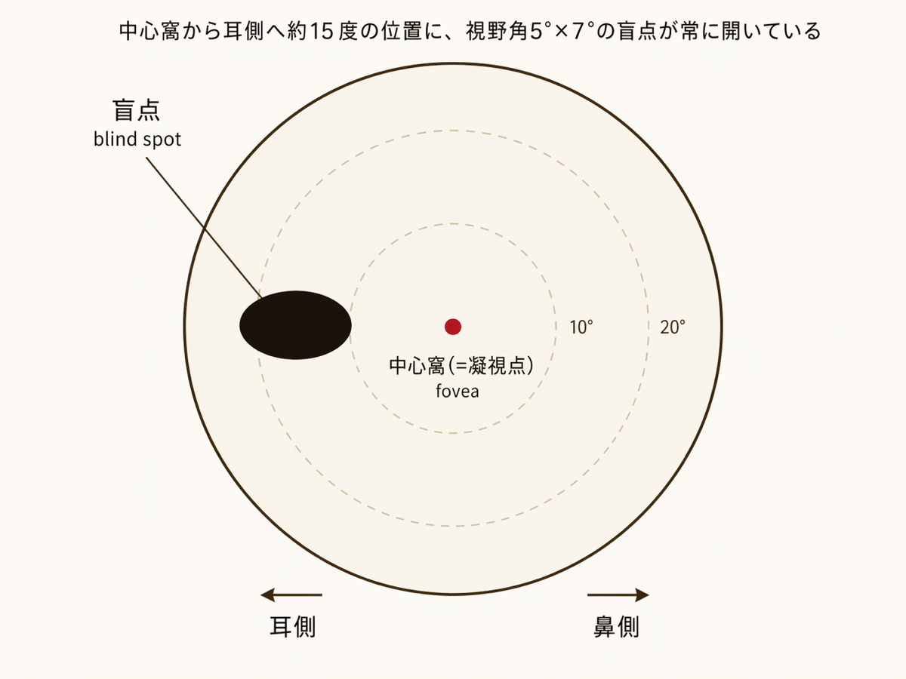
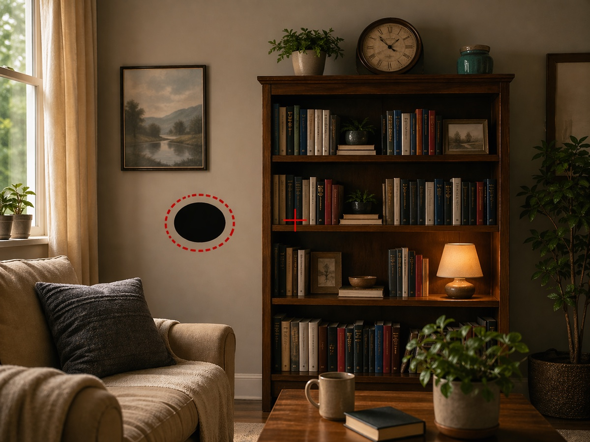
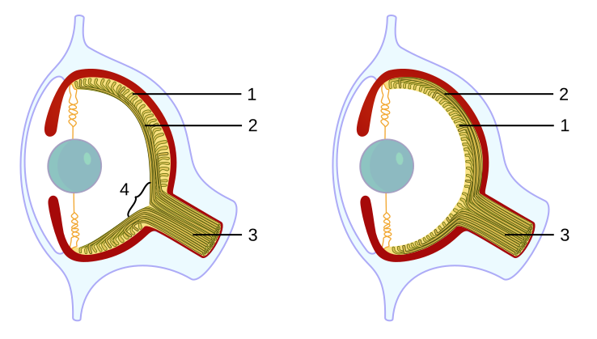
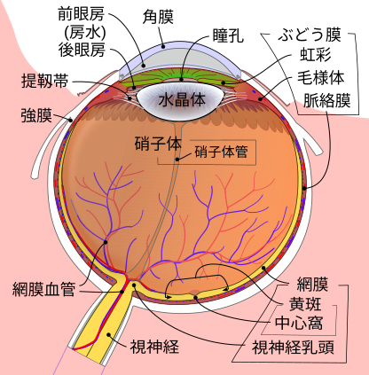
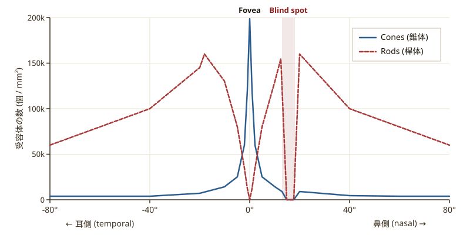

Vision / 知覚と脳
視野の中に、何も映らない穴がある。
脳はその穴を、何食わぬ顔で埋めている。
エドム・マリオットが眼の中に「見えない領域」の存在を示し、『視覚に関する新発見』を公表した年。
同年、英・蘭・瑞の三国同盟が成立。アーヘン条約で帰属戦争終結。山東地震で約4万人が犠牲に。
難易度: 2/5 — 片目で凝視できれば誰でも体験できる。
体験: 自分の盲点を画面上で発見する。
片目を閉じて画面を見ても、特に違和感は感じないかもしれない。両目で見ても片目で見ても、世界は同じように広がっているように思える。当たり前のことだと、普段は疑わない。
けれどあなたの右目にも、左目にも、何も映らない場所がある。片目で世界を見ているとき、視野の中にはかならず消えた領域がある。そこに何があるか、あなたは今まで気づいたことがないはずだ。
見えている世界は、目から届いた情報そのままではない。脳が欠損を埋め、作り変えたものである。
片目で世界を見るとき、視野の一部は物理的に見えていない。脳はその穴を、周囲の情報で縫い合わせている。私たちが知覚している世界は、目が届けた映像ではなく、脳が構築した合成である。
両目で見ている世界に、欠損は感じられない。目を開けていれば、視野の隅々まで連続した像が広がっているように思える。片目を閉じて見ても、その印象は変わらない。だが実際には、その視野の中にはかならず 見えない領域 が存在している。眼球の構造的な帰結として、網膜の一点にだけ、光を感じる細胞が存在しない。それでも私たちは、その穴の存在に気づかない。
1視点を一つに絞る — 「片目で見ている人」の図

両目で見ているとき、左右の盲点はちょうど打ち消し合うように位置がずれていて、視野には何の異常も現れない。実は片目で見ても、脳が周囲の景色で穴を勝手に埋めるので、やはり穴は感じられない — シナリオで「両目でも片目でも気づかない」と書いたのはこのため。
ただし片目に絞った状態で特定の凝視を行うと、補完が追いつかず物体がふっと消える瞬間が訪れる。それを発見するには、視点を片方の目だけに絞る必要がある。
そこでこの記事では、以降「片方の目だけで世界を見ている」状態を想定して話を進める。便宜上それを左目と呼ぶ(右目でも対称的に同じことが起きる)。図の人物が、その状態にあるあなただと思ってほしい。赤い枠の目から前方に広がる円錐が、その左目だけで凝視したときに視線が届く範囲。次の図では、この範囲を平面に展開して視野として描く。
2視野の中で、盲点はどこにあるか — 位置関係

片目で見える視野(=正面を凝視したときに同時に見えている範囲)を、円形の地図として展開した図。中央の赤い点がいま凝視している中心窩。そこから耳側(左)に約15度の位置に、視野角 5°×7° の盲点がある。
これはあくまで「位置関係の地図」 — 実際の見え方は次の図で示す。
3あなたが実際に見ている世界では — 視覚体験

同じ位置関係を、あなたが実際に見ている景色に重ねるとこうなる。中央の + が凝視点、赤い破線で囲った領域が盲点位置。そこに来た物体は、知覚から消える(画像では分かりやすさのため黒く塗ってある)。
本当はそこに何があっても、脳が周囲の景色で勝手に埋めるので、「穴」として感じることはない。
この穴の存在が発見されたのは、意外なほど遅い。人類が眼の構造をそれなりに知っていた時代にも、自分に盲点があると気づいた者は誰もいなかった。見えていないのに、見えていないことが分からない。この事実を最初に実験で示したのは、一人のフランスの物理学者エドム・マリオット1620–1684。フランス王立科学アカデミーの創設メンバー。気体の圧力と体積の法則(英語圏ではボイルの法則として知られる)、樹液の流れ、視覚の研究で知られる。自然哲学を実験と幾何学で切り開いた世代の一人。だった。
Edme Mariotte
フランス王立科学アカデミー / 1620 — 1684
物理学者・自然哲学者・カトリック司祭。気体の法則、植物生理、光学、視覚の実験で知られる。1668年、暗背景に置いた二つの白点を用いて、自分の目の中に「何も映らない領域」があることを示した。彼の書簡はパリからロンドンの王立学会へ送られ、欧州の知識人の間で実演が流行した。なお伝えられる肖像は後世の想像に基づく可能性が高い。
Wikipedia →"Having fastened a small round paper to a black cloth, I placed another of the same shape two feet to the right of the first... Closing the left eye and fixing the right upon the first paper, at a certain distance the second paper vanished entirely from my sight."
黒い布に小さな丸い白紙を留め、もう一枚を右に2フィートの場所に置いた。左目を閉じて右目で最初の紙を凝視すると、ある距離でもう一枚の紙がまったく視界から消えたのである。
— Edme Mariotte, 『Nouvelle découverte touchant la veüe』(1668)
※ マリオットは右目で実験した(右目の盲点 = 視野の右側)。本記事の体験コーナーでは便宜上「左目」で行うが、左右どちらの目でもまったく同じ現象が起きる。
マリオットはこの実験をフランス宮廷で実演した。誰かの顔の前に小さな物を置いて片目を閉じさせれば、その物が「消える」瞬間を再現できる。貴族たちは互いの首が見えなくなる実験に熱狂したと伝えられる。英国王チャールズ2世の面前で実演されたという逸話も広まったが、近代の史料研究者は、王立学会への報告は書簡で行われ、王が実演の場に居合わせた形跡はないと指摘している。

図中の番号: 1=網膜 / 2=神経線維 / 3=視神経 / 4=盲点
左=ヒトを含む脊椎動物 / 右=タコ。左(脊椎動物)では神経線維(2)が光受容体の手前を走り、束ねられて網膜を貫いて視神経(3)になる。その貫通点に光受容体が置けず、盲点(4)ができる。右(タコ)では神経線維が光受容体の裏側を通り、網膜を貫かずに脳へ抜ける。だからタコには盲点がない。同じ「カメラ眼」でも、配線の通し方が逆向きになっている。
出典: Jerry Crimson Mann, Caerbannog / CC BY-SA 3.0 / Wikimedia Commons。
盲点は、脊椎動物に固有の現象である。タコやイカの眼では神経線維が網膜の裏側を通るため、視神経が網膜を貫く必要がない。私たちの眼は、光受容体光受容体網膜にある、光を電気信号に変える感覚細胞。桿体(明暗を検出、約1億個)と錐体(色を検出、約600万個)の2種類がある。の手前に配線を走らせるという奇妙な設計を採用してしまった生き物であり、その帰結として出口の一点に盲点を抱え込んでいる。
誤解
盲点があっても脳が滑らかに埋めてくれているのだから、視覚には実質的に問題がない。
実際
補完は「周囲から推論された内容」であり、そこに実際に何があるかを脳は知らない。小さな物体が盲点に入れば、それは事実上見えていない。
誤解
両目で見ているから、盲点は打ち消されて存在しない。
実際
両目の盲点は視野中の位置が違うので相補的に補われるが、片目で見た瞬間に盲点は必ず現れる。両眼視でも単眼由来の情報は盲点で欠ける。
誤解
盲点は視野の端にあるので気にならない。
実際
盲点は中心窩からたった約15度外にある。腕を伸ばして握った拳が約10度なので、拳一つ半分くらい外側 — 「端」ではなく、中心視のすぐ脇にある。
これから画面上で、あなたの盲点を直接発見する。必要なのは、片目と、少しの距離の自由だけ。椅子に座ったまま、顔を画面に対して動かせる状態にしてほしい。暗い背景に二つの印を置いたマリオットの実験を、スクリーン上で追体験する。
手順:
① 右目を手で覆う。
② 左目だけで、画面の右側の + を凝視する。視線を動かさない。
③ そのまま顔をゆっくり画面に近づけていく。
④ ある距離で、左側の ● がすっと消える瞬間が来る。
消えないときは、顔の位置を少し動かすか、下のスライダーで間隔を調整する。
右目を閉じ、左目で画面右の + を凝視したまま、顔を画面にゆっくり近づけてください。約25〜50cmのどこかで ● がすっと消えます。見つけたら、そこがあなたの盲点です。間隔がしっくり来ないときは下のスライダーで微調整。
●が消えたとき、あなたの視野には何も「欠け」ていないはずだ。黒い四角でも、穴でもなく、紙が連続して広がっているように見える。消えているはずのものの場所に、何かが「ある」。脳がそこを、周囲の色で塗りつぶしている。
同じ要領で + を凝視する。今度は ● の位置に水平線が貫いている。● が消えた瞬間、本来なら ● で中断されているはずの線が、ひと続きに見えるはずだ。これが補完の最も分かりやすい現れ方である。トグルボタンで線・●を消して比較してみるとさらに分かりやすい。
本来は線の途中に黒い円があるはずなのに、盲点ではその円が無かったことにされ、線だけが連続して見える。脳は「線が続いているはず」と判断して、視覚像を縫い合わせている。あなたが見ているのは、網膜が送った像ではない。
格子模様の上に白い円と + が置かれている。同じ手順で凝視すると、白い円の部分が格子模様で埋まって見える瞬間が来る。脳は「周囲が格子なのだから、そこも格子のはず」と推論して穴を埋める。線・色だけでなく、パターン構造そのものを補完しているのが体感できる。
ここで起きているのは、単なるデータの補間ではない。盲点の周囲が格子なら格子で、均一な色なら色で、脳は「そこにあるはずの情報」を作り出す。実際にそこに何があるかを脳は知らない。知っているのは、周囲から推論された「もっともあり得る内容」だけである。
網膜には光を電気信号に変える光受容体 — 桿体が約1億個、錐体が約600万個 — が、合わせて1億個を超える数で並んでいる。ただし、一点だけ、それが存在しない場所がある。網膜の神経節細胞から伸びた軸索が束になって眼球の外へ抜けていく出口 — 視神経乳頭視神経乳頭(optic disc)網膜上で視神経が眼球を貫いて外へ出る部位。神経線維が集中しているため光受容体が存在できず、結果として視野の盲点に対応する。眼底検査でも明瞭に見える円形の構造。である。

ヒトの眼の断面図。視神経が眼球を出る点が視神経乳頭=盲点にあたる。中心窩(fovea)は網膜の中央付近にあり、そこから鼻側に視神経が抜ける。レンズで像が反転するため、視野としては耳側に盲点が現れる。出典: Rhcastilhos, Hatsukari715, Jmarchn / CC BY-SA 3.0 / Wikimedia Commons。
視神経乳頭は中心窩から鼻側に約3〜4mm離れた網膜上にあり、レンズで像が反転する関係で、それが視野では耳側に投影される。視野角にすると中心窩から約15度の位置、サイズは5°×7°視野角5°×7°腕をまっすぐ伸ばして親指を立てたとき、親指の幅が約2°、握り拳の幅が約10°。盲点はその間で、握り拳の半分よりやや大きいくらいの楕円が、常に視野の中に開いていることになる。の楕円。脳にとってこの穴は、網膜の表面地図のうち信号が全く届かない領域として存在する。ではその空白を、脳はどう扱うのか。ヒントは光受容体の分布そのものにある。

グラフの読み方: 横軸 = 中心窩からの角度(Angle from fovea)、縦軸 = 1mm² あたりの光受容体の数。赤の点線(Rods)= 桿体、青の実線(Cones)= 錐体。0° = 中心窩(Fovea)、左側が耳側(temple side)、右側が鼻側(nose side)。
中心窩(0°)で錐体が最大になり、周辺へ向かって桿体が増える。そして右側の15°付近で両者の数が一気にゼロに落ち込む(Blind spot)。これが盲点の解剖学的実体 — 光を感じる細胞そのものが、その位置だけ存在しない。
出典: Cmglee / CC BY-SA 3.0 / Wikimedia Commons(原資料: Wandell, Foundations of Vision, Stanford)。
このグラフは盲点の正体を実データで示している。15度の位置で棒状の凹みが走っていて、光を感じる細胞が一時的にゼロになる。そこに光が届いても、網膜レベルで情報はすでに失われている。では脳はその後どうしているのか。
盲点が消える三段階 — 全体図
Retina → V1 → Consciousness / 一目で把握する
光受容体が並ぶが、一点だけ存在しない。網膜の段階で情報はすでに失われる。
→ そこの光は届かない
大きな受容野を持つ細胞が、穴の周囲の情報で応答する。線・色・パターンを読み取る。
→「あるはずの内容」を推論
推論された内容が、他と区別なく意識にのぼる。穴があった事実は経験から消える。
→ 視野に「穴」は現れない
小松英彦小松英彦1953年生まれ、日本の神経生理学者。生理学研究所・総合研究大学院大学教授を歴任。霊長類の視覚野での単一細胞記録によって、色・面・補完の神経機構を研究してきた一人。が2006年に Nature Reviews Neuroscience にまとめた総説によれば、霊長類視覚野視覚野(V1)後頭葉にある一次視覚野。網膜からの信号が視床を経て最初に大脳皮質で処理される場所。受容野と呼ばれる「担当する視野の領域」を持つニューロンが並ぶ、網膜の地図。の単一細胞記録からは、盲点対応領域にあるニューロンの一部が、盲点の外側に広がった大きな受容野を持ち、周囲のパターンに応答することが明らかになっている。これは「盲点内に実際に光が届いたから」ではなく、「周囲の情報から、盲点にあるはずのものを推論している」結果だと解釈される。
以下、上の全体図で示した3つの段階を、一つずつタップして詳しく見ていく。
各段階を深掘り
光が視神経乳頭に落ちても、そこには光受容体がない。網膜の段階でその情報はすでに失われている。ここで重要なのは、脳が「情報がない」という情報さえ受け取らないことである。信号が来ない場所は、網膜の地図の上で「暗い」でも「欠損」でもなく、何でもない場所になる。
V1の盲点対応領域にある一部のニューロンは、盲点の外側まで広がった大きな受容野を持つ。盲点の周囲が格子なら格子で、色ベタなら色ベタで、細胞が応答する。「最もありそうな内容」が、盲点の中に書き込まれる。これは線形の内挿ではなく、周囲のパターン構造を拾う文脈依存の推論である。
推論された内容は、他の視覚情報と区別されずに意識にのぼる。私たちは「補完された部分」と「見えた部分」を判別できない。結果として、視野の中に穴が存在するという経験は生じない。盲点は、知覚の地図の上から構造的に消されている。「見えなさ」は意識の対象ではない。
1668
マリオット、盲点を発見
『視覚に関する新発見』をパリで公表。暗背景に置いた二点を使う実験を書簡で記述し、ロンドンの王立学会に伝えられる。仏宮廷で実演が流行した。
1670年代
マリオット対ペッケ論争
解剖学者ジャン・ペッケ(Jean Pecquet)との間で、光を感じているのは網膜か脈絡膜かという論争が起きる。マリオットは盲点の存在を根拠に脈絡膜説を主張した(現在では誤りとされる)。
19世紀後半
視野計による精密測定
Förster(1869)、Bjerrum(1889)らによる視野計(perimetry)の発達によって、盲点の位置とサイズが視野角の単位で精密に測定されるようになる。耳側約15度、5°×7°という現在の値はこの時期に確立した。
1991
Ramachandran、人工スコトーマ
V. S. ラマチャンドランと R. L. グレゴリーが、人工的な視野欠損(スコトーマ)を作って補完の時間経過を測定する手法を発表。盲点での補完は即時に起きるのに対し、人工スコトーマでは数秒かかることから、両者の神経機構の違いが示唆された。
2006
V1ニューロン応答の総説
小松英彦が Nature Reviews Neuroscience に補完現象の総説を発表。霊長類V1の単一細胞記録の蓄積から、盲点対応領域のニューロンが大きな受容野を持ち、周囲情報に応答することを整理した。
現代
予測符号化の枠組みへ
補完は「脳が絶えず世界の内容を予測し、誤差を最小化している」という予測符号化予測符号化脳は世界のモデルから次の入力を予測し、実際の入力との差分(予測誤差)のみを上位へ送るという理論枠組み。Karl Friston らにより拡張された。盲点補完はこの予測生成の最も単純な例と見なされつつある。の理論枠組みの中で、特殊な現象ではなく脳の基本動作の一例として再解釈されつつある。
盲点は、奇妙な現象である。視覚の欠陥であるはずのものが、欠陥として感じられない。見えていないことが、見えていないと分からない。それは「見えている」ことと、主観的には区別できない。これは視覚の失敗ではなく、視覚の設計そのものに埋め込まれた特徴だと言える。
"We're all hallucinating all the time. It's just that when we agree about our hallucinations, we call that reality."
私たちは皆、常に幻覚を見ている。その幻覚について意見が一致するとき、私たちはそれを現実と呼ぶ。
— Anil Seth, "Being You: A New Science of Consciousness" (2021), および 2017年TED講演 "Your brain hallucinates your conscious reality"
私たちは物理的な現実をそのまま受け取っているわけではない。目が届けた断片を、脳が選り分け、空白を埋め、連続した像として組み立てている。盲点は、その編集作業の痕跡の一つに過ぎない。網膜の血管の影、まばたきによる中断、眼球振動による像のぶれ — これらもすべて滑らかに補正され、私たちの視覚経験には現れない。見えているものの多くは、脳が「もっともらしい」と判断して作り上げた合成である。
隣接する主題
色は存在しない
波長はあるが、「赤さ」という質感は網膜と脳の産物である。物理世界に色はない。
チェッカーシャドウ錯視
同じ輝度の二つのマスが、影の文脈によって違う明るさに見える。脳は照明条件を推論してから色を提示する。
マクガーク効果
耳に届いた音声が、口の動きで書き換わる。視覚と聴覚は独立して届くのではなく、統合された「知覚」として差し出される。
A new discovery touching vision
盲点の発見を告げるマリオットの書簡。原典フランス語版の英訳が1668年の Royal Society 機関誌に掲載され、欧州中の知識人に伝わった。
The neural mechanisms of perceptual filling-in
補完現象の神経機構を霊長類単一細胞記録と心理物理から総説した決定版の一つ。盲点補完の即時性、V1の盲点対応領域の応答特性を整理している。
Perceptual filling in of artificially induced scotomas in human vision
人工的に作った視野欠損における補完の時間経過を測定した先駆的研究。盲点補完との機構的差異を示した。
Foundations of Vision
視覚科学の標準的教科書。網膜の解剖、光受容体の分布、受容野の構造まで体系的に扱う。本記事で使用した光受容体分布グラフの原資料。
Edme Mariotte (1620–1684): Pioneer of Neurophysiology
マリオットの盲点発見の史料的検討。王前実演伝説の出所と信憑性を批判的に論じている。